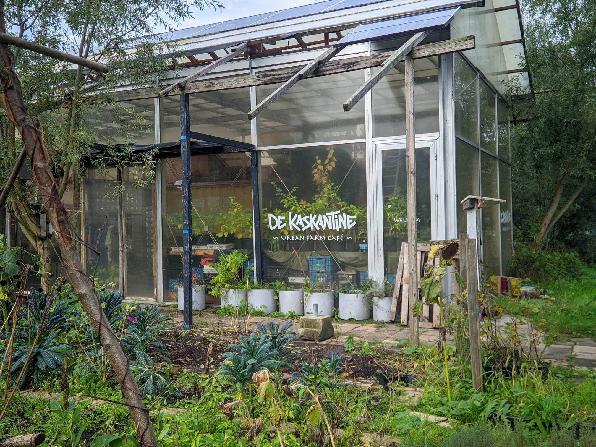

WAT IS DE KASTKANTINE?
De Kastkantine is een 'community' waar geïnteresseerden en betrokkenen klimaatneutrale oplossingen kunnen oefenen en bespreken. Dit gebeurt op verschillende vlakken, variërend van cursussen over hoe je het beste een moestuin kunt onderhouden tot hoe je compost kunt maken van voedselresten. Op deze manier proberen ze mensen te betrekken bij een groenere toekomst en ervoor te zorgen dat deze mensen ook plezier beleven aan het proces.
VORIGE LOCATIES
De Kaskantine heeft altijd in Amsterdam gezeten. De eerste locatie was een oude suikerfabriek in Halfweg tot 2016. Daarna verhuisden ze naar de Haarlemmerweg tot 2017. Vervolgens was De Kaskantine 3.0 gevestigd op de Vlaardingenlaan tot 2019. En nu zijn ze gevestigd op de huidige locatie aan de Handbalstraat. De Kaskantine kon vaak maar kort op een locatie blijven omdat ze stukken land gebruikten die slechts tijdelijk beschikbaar waren.
STREVEN NAAR EEN BETERE PLANEET
De reden achter dit bedrijf is om duidelijk te maken dat het mogelijk is om groener te zijn voor onze planeet en dat dit ook leuk kan zijn! Ze doen dit door mensen bewust te maken en hen te helpen hun leven te vergroenen. Daarnaast is De Kaskantine zelf uiteraard ook erg groen. Zo produceren ze bijvoorbeeld al het voedsel voor het 'urban farm café' zelf en halen ze voedsel op dat anders weggegooid zou worden.